Service Manager
Creating a Service
Now that you have OpenLP set up the way you want, it is time to put it to use.
Everything you need to display will be in the left panel called the Media Manager, under their respective categories. Using the Media Manager you can add new media, songs, images, Bibles or create a custom slide as discussed earlier in the Media Manager section.
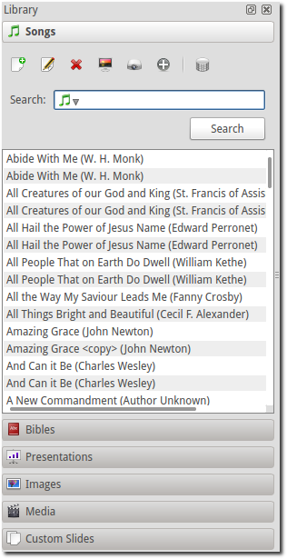On the right side of your screen at the top is the Service Manager. Everything you want to display should be in the Service Manager and preferably in the order you want to display it.
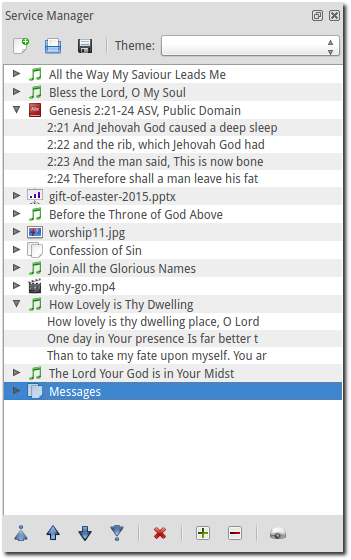New, Open and Saving the Service
Three icons at the top of the Service Manager will do the following:
- Create a new service:
- This first icon will create a New Service.
- Load an existing service:
- This second icon will open an already created service file. Use this icon to to find the location of your file or you can open a saved service by dragging and dropping it into the service manager. The service will be opened and the existing service replaced. You will first be prompted to save your previous service if changes were made.
 Save this service:
Save this service:- This icon will Save the service you created, added to, or rearranged. The order of service, songs, images, Bible verses, service notes, and custom slides are all saved in the file.
Editing Songs in the Service
You can create your service file on a different computer than the projection computer. If a song is not in the projection computer database when you open the saved file OpenLP will automatically import the song into the song database with this option checked here Songs “Add missing songs when opening service.”
You always have the ability to edit the song in the service manager by right clicking on the song and choosing from the context menu. Follow the directions here Creating or Editing a Song Slide to make changes to your song.
Note: Editing a song in Service Manager will be applied to the Media Manager song database. Editing a song in the Media Manager will be applied to the song in your Service Manager.
Adding Media
To add your media you can click on an item in the Media Manager hold and
drag your selection from the Media Manager over to the Service Manager
or, after clicking the media or verse you want to use, click the  .
This will add your media to the service side at the bottom. Once it is in the
Service Manager you can click on your item and drag and drop it in the order you
want or, click the item and use the icons shown below to move it up or down in
the order you want.
.
This will add your media to the service side at the bottom. Once it is in the
Service Manager you can click on your item and drag and drop it in the order you
want or, click the item and use the icons shown below to move it up or down in
the order you want.
 Move item to the top of the service.
Move item to the top of the service.
Move item up one position in the service.
 Move item down one position in the service.
Move item down one position in the service.
 Move item to the end of the service.
Move item to the end of the service.
To view your Bible or song verses one by one, use the icons below. This is a convenient way to move around through the verses if they are skipped or repeated. Double-click on the verse you want to display live.
 Expand all the service items.
Expand all the service items.
 Collapse all the service items.
Collapse all the service items.
 Send the selected item to Live.
Send the selected item to Live.
 Remove the service item.
Remove the service item.
Note: You always have the option to send any media live direct from the Media Manager. Please see the Media Manager section for more details.
Displaying an Item
When you have all of your items needed for the service in your Service Manager
there are a few ways to get them to display on the screen. You can double-click
the item, click it once with the mouse and push the Enter key on your
keyboard, right click the item and left click Show Live or click it once with
the mouse and click on the projector at the bottom of the Service Manager.
Any of these methods will display your item on the screen. When your item is displayed, it will appear in the Live windows just to the left of the Service Manager.
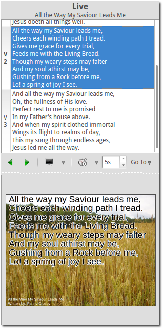To Preview an item in the left Preview panes, right click the item and left click Show Preview.
Changing a Service Theme
When you get your Service file set up and you are previewing a slide or sending it Live and you notice you don’t have the correct theme for it, you can right click the item and mouseover Change Item Theme and select the theme you want to use.
Moving Through a Service
Once you have your first item displayed live you can move through the service in
a couple of ways. You can double-click on each item you need displayed, or click
it once and press enter. If your songs, verses, etc. are in the order you will
be displaying them, you can use the Right Arrow key on your keyboard to
move down through your service. Pressing the Left Arrow key will move up
through the service. Every time you press the Left Arrow or
Right Arrow key the next item in your Service will be displayed.
Moving Through a Song, Bible Verses or Images
When you display a song or Bible verse with multiple verses you will need to move through them. When a song or verse is being displayed you will see the lyrics in the top Live window and how it actually appears on your display in the bottom Live window.
To change slides you can use your mouse to click on each slide in the top Live window, use the Left Arrow and Right Arrow icons under the top Live window.
 Move to next.
Move to next.
 Move to previous.
Move to previous.
You can use the Down Arrow key to move down through
the song or verses. Using the Up Arrow key will move you from bottom to
top. Page Up and Page Down keys will do the same thing.
There is shortcut support for the Live Controller in OpenLP. This allows you to navigate through, and jump between, your slides in the Live Controller using only your keyboard. This works for any type of slides, e.g. songs, Bible verses and images.
How does it work?
If you want to jump to verse 3 using the keyboard you press v and within
a time frame of 350ms you press 3. Keep in mind to be quick and you will
be successful.
The available keyboard shortcuts are:
- Verse: v
- Chorus: c
- Bridge: b
- Pre-Chorus: p
- Intro: i
- Ending: e
- Other: o
- and the numbers from 0-9
Adding a Group of Images
At some point you may have a group of images to display together. It may be
pictures from a youth group adventure, bulletin announcements, or some other
reason. You can either create the group in the Media Manager and then
click the icon above the images, or you can manually select a
group of images. Do this by holding the Ctrl
key on your keyboard and click each image you want to add as a group. As you
click the images they will remain highlighted. When you are done with your
selections you can either click the icon above the images or,
click on one of the highlighted images, hold the mouse button and drag them over
to the Service Manager side and place them where you need them.
Sorting a Group of Images
If you do not like the order the images are in, right click Images.
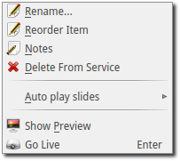Left click Reorder Item.
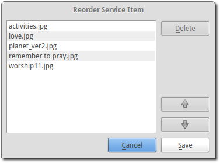From this box you will be able to rearrange the order of your images by clicking on one and using the Up and Down arrows to move it to where you want it. If there is an image you do not want in your order, click on it and then click the Delete button. When you are done arranging your images click Save.
If you need to add another image from the Media Manager to your group of images, left click the image you want to add and hold the mouse button and drag it over your group of Images and release the mouse button. You will be given two options, Add New Item and Add to Selected Item.
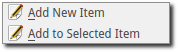If you click Add New Item your image will be separate from your group of images as another item at the bottom of the Service. If you click Add to Selected Item your image will be added to your group of images.
Adding a Service Note
You have the ability to leave yourself or the next projector person a service note. This is done by right clicking on an item in your service manager and left clicking Notes.
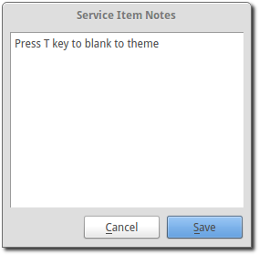You can type your note in the box and click Save. If you change your mind you can click Cancel. Your note will appear as a yellow note on your item.
To view your note move your mouse cursor over the item in your service and you will see a popup with the information you typed in your note.
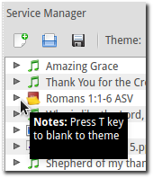If you need to change your Note or delete it, open it again, delete your text and click Save
Using the Service Timer
The Service Timer is available for any media item with multiple slides. This includes Bible verses, Songs, or a group of images. The Service Timer is accessed in the Live Controller Bar between the Live panes.
The time delay increment is in seconds. Use the up or down arrow on the right of the timer to change the number of seconds or type in the number of seconds you want to use. This number determines how many seconds will lapse before your media item will automatically change to the next slide.
Immediately to the left of the second counter is a down arrow. Clicking on this arrow will give you two options for the use of the timer.
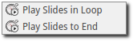- Play Slides in Loop:
- Selecting this option will continuously loop your slides from beginning to end, and back to the beginning again. The slide loop will continue until you click the timer start and stop button again or move to the next service item.
- Play Slides to End:
- Selecting this option will display your slides through once and stop at the end.
 Timer start and stop:
Timer start and stop:- Click this button to start or stop the timer function. You can also use the
keyboard shortcut
Lto start and stop the continuous loop.
Using the Media Timer
Note: The media timer is only available when you are using System as your default player. Please check your media configuration here: . Configure your player using System with these instructions. Media.
The media timer is used when you have a media file in your service manager and you would like it to start and/or stop at a specified time.
After adding your media file to the Service Manager you can mouseover your file and the popup will show you the play time “Length” in hours, minutes and seconds.
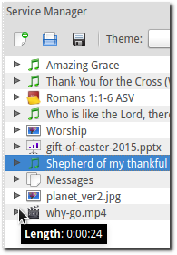Right click on your media file and left click
Start Time.
- Item Start and Finish Time
- The start and stop time default to the beginning and end of the video.
Change the hours, minutes and seconds to the times you want your video to begin and end. When you are finished click Ok to save your changes or Cancel to leave the times as they were originally. When you display your media live it will start and stop with the times you configured.
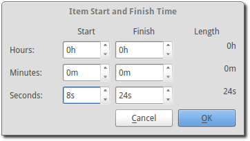After your changes have been saved you can check your start and stop times by putting your mouse cursor over the media file.
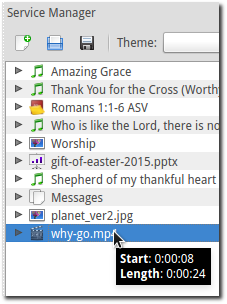Using the “Blank to” Control
On the Live Controller Bar in between the Live windows are three options to Blank your screen. Depending on how narrow your slidecontroller is, the three options will be presented as a dropdown menu in the toolbar.
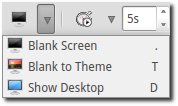Or as three separate buttons in the toolbar.
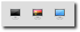 Blank Screen:
Blank Screen:- Choosing this option will blank your projector to black as if it were shut off.
The shortcut for this option is
.(fullstop/period on your keyboard).  Blank to Theme:
Blank to Theme:- Choosing this option will show your blank theme only, without lyrics or verses.
If you are blanking a song with an assigned theme it will blank to that theme.
If no theme is assigned or you are blanking a presentation or image, it will
blank to the global theme. The shortcut for this option is
T.  Show Desktop:
Show Desktop:- Choosing this option will show your desktop wallpaper or a program that you have
open on the extended monitor or projector. You can seamlessly switch between one
program and OpenLP by Blank to Desktop. The shortcut for this option is
D.
You can change or add to the keyboard shortcuts here .
Linked Audio Control
You can stop or start the audio playing on your Linked Audio by using this button. This button becomes available when you have linked an audio file to a song and it is in use.
Saving the Service
- Save this service:
- This icon will Save the service you created, added to, or rearranged.
Now that you created your service, tested it and are ready for your worship service, you will want to save your service file. OpenLP will remind you to do this when you close the program or you can click the save button New, Open and Saving the Service at the top of your service file. Choose the location you want to save your file and click Ok.